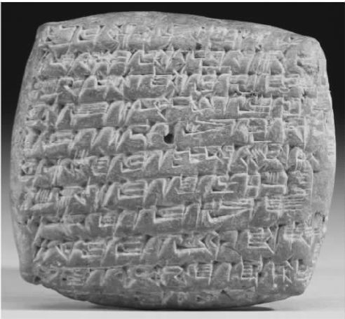
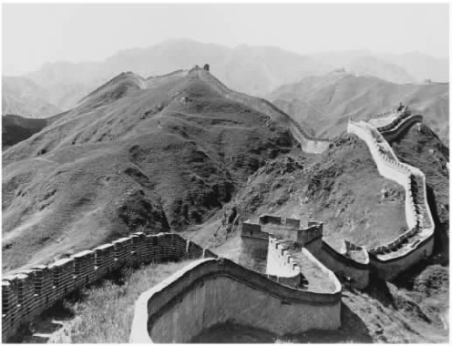
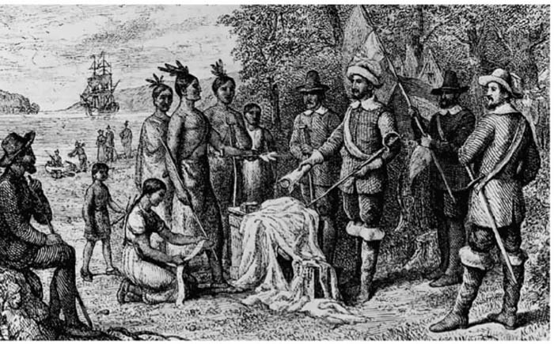
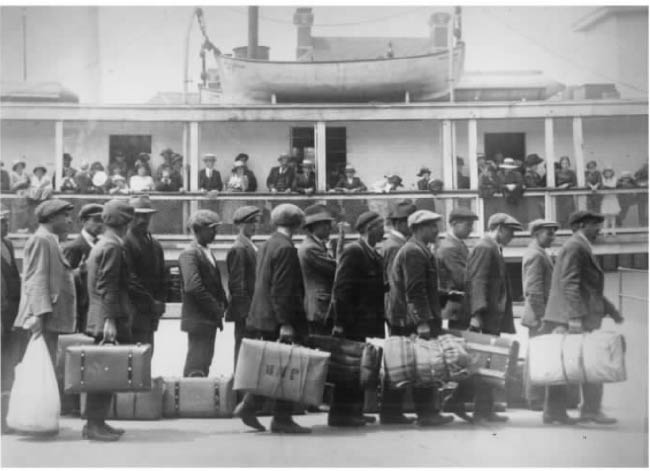

如果我们问走在伦敦、纽约、曼谷或里约热内卢街头的普通人什么是全球化的本质，他们的回答可能与“新技术”带动下的政治与经济间不断发展的相互依存形式有关，如个人电脑、因特网、移动电话、寻呼机、传真机、掌上电脑、数码相机、高清晰电视、卫星、喷气式飞机、航天飞机和超级油轮。尽管如以下几章所示，技术对当代全球化各种存在形式的解释并不是完整的，但是，如果否认新技术在创造、增加、扩展和强化全球性的社会依存和交流方面的作用，那将又是愚蠢的。特别值得一提的是因特网，它通过创建能够连接亿万人、民间团体以及政府机构的万维网，对促进全球化起到了关键作用。这些新技术的出现不过30年的时间，因此，如果我们赞同那些评论者的观点，认为全球化确实是一个新现象，这似乎也不无道理。
然而，我们在前一章定义全球化时，同时所强调的是这一现象的动态本质。全世界相互依存的发展，以及不断深化的全球互联意识的总体增长，都是具有深刻历史根源的、循序渐进的进程。例如，研制出手提电脑和超音速喷气式飞机的工程师都站在技术创新先驱的肩膀上，是先驱们创造了蒸汽机、轧棉机、电报机、留声机、电话、打字机、内燃机和电器用品。反过来说，这些产品的存在又依赖于更早的技术发明，如望远镜、罗盘、水车、风车、火药、印刷机和远洋轮船。为了承认所有的历史记载，让我们来回顾一下在更为遥远的年代出现的重大社会成就和技术成就，比如造纸、文字的演化、轮子的发明、野生动植物的驯养和驯化、语言的出现，以及在人类进化的发端时期，我们非洲祖先缓慢的向外迁移。
这样，对于全球化是不是一个新现象这个问题的回答，取决于我们愿意把导致最近技术和社会结构的原因追溯到多久之前——因为大多数人总是把全球化这个流行的词语与技术和社会结构联系在一起。为了理解全球化的当代特征，有些学者有意识地把全球化的历史范围限制在了后工业社会 [3] 的过去40年；其他学者则想把这一时间表扩大，进而包含19世纪这一具有开拓性进步的时代；还有另外一些学者则认为，全球化真正代表的是一些复杂进程的延伸和继续，而这些进程始于五个多世纪前资本主义世界制度和现代性出现的时期；其他少数研究者则不愿把全球化限制在仅仅使用十年或世纪量度的时段范围内，他们宁愿建议，这些进程几千年来一直都处于发展过程中。
无疑，这些争论不休的视角各有洞见。在随后几章里我们就会看到，赞同第一个角度的人列举了大量证据以证明他们的观点：自20世纪70年代早期以来，全球交流的急速增加和膨胀表现了全球化历史的一次巨变；提出第二种观点的人一针见血地强调，在所谓的工业革命的技术爆炸与全球化的当代形式之间存在着密切的联系；代表第三种观点的人则准确地指出了16世纪发生的时空压缩的重要意义；最后，坚持第四种观点的人提出了一个颇有道理的论点，他们认为，如果不考虑我们地球历史中的古代发展和持久动因，那么任何对全球化真正全面的论述都会存在极大的欠缺。
无可避免，下面这个简短的年表也是笼统的和不完整的，但它却足以让我们清楚地认识到：全球化和人类本身一样古老。以社会交流速度的显著提高和地理范围的急剧扩大作为划分依据，这一简短的历史年表确定了五个显著的历史时期。在这个语境之中，我们必须记住，我的年表并不一定意味着历史的线性发展，也并不提倡一种传统的以欧洲为中心的世界历史观。全球化的历史涉及我们这个星球所有主要的地区和文化，其中充满了不可预料的意外、剧烈的转变、突然的间断以及戏剧性的逆转。
这样，我们应该尽量避免把一些具有决定论意义的观念，如“必然性”和“不可逆性”，强加给全球化。然而，重要的是我们应该注意，历史上发生的技术和社会的巨大飞跃曾把这些进程的强度及其在全球的范围推进到新的水平。记住这些应该注意的方面，再去探讨和分析全球化的简短年表，我们就能领会每个时期的新颖之处，以及全球化这一现象本身的连续性。
让我们从大约一万两千年前开始，来对全球化做一个简短的历史概述。当时，一小群猎人和采集食物者到达了南美洲的南端，这一事件标志着人类非洲祖先一百多万年前以来在五大洲定居这一漫长过程的结束。虽然直到更近一些的时期，才有人类在太平洋和大西洋中的一些主要岛屿栖息，但真正的人类全球散居已最终完成。游牧者最终成功地定居南美洲，这全靠他们西伯利亚祖先的迁徙功绩，他们早在此前1000年前就穿越白令海峡进入北美洲了。
在这一全球化的最早时期，遍布全世界的成千上万的狩猎者和食物采集者群体的相互接触大多是偶然的，在地理上也是有限的。大约在一万年前，这一倏忽而逝的社会互动模式发生了巨大变化，人们在自产食物方面迈出了关键的一步。由于多种因素的作用，包括适合驯养和驯化的动植物在自然界的出现，以及各大陆在面积和人口规模方面的差异，在这些日益发展的农业定居点当中，最为理想的只有位于或靠近欧亚大陆的某些地区。这些地区位于中东的新月沃土、中国的中北部、北非、印度的西北部和新几内亚岛。随着时间的流逝，这些早期的农夫和牧人的食物有了剩余，人口开始增长，出现了永久的村落和防御性的城镇。
流浪的游牧人群定居下来，组建了部落和酋长领地，并最终发展为强大的农业生产国家。高度集权、阶层化的族长式社会结构从本质上瓦解了政治权力分散、实行平等主义的狩猎和采集食物的人群，酋长和祭司成为新的领导者——他们无须从事繁重的体力劳动。而且自人类有史以来，这些农业社会第一次具有了额外供养两个社会等级的能力，这两个等级的成员不需要参加食物生产。一群人由全职的手工业专门人员组成，他们致力于发展新技术，如功能强大的铁器、由贵金属制成的精美的装饰品、错综复杂的灌溉沟渠、精致的陶器和编制物品，以及雄伟的建筑物；另一群人则由专门的官吏和士兵组成，他们后来发挥了重要的作用，如在统治者的领导下垄断暴力手段，为中央集权领地的生存和发展所必备的剩余粮食做精确的账目统计，获取新的领土，建立永久的贸易路线，以及到远方进行系统的探险活动。
然而，在很大程度上，史前时期的全球化是十分有限的。能够克服当时存在的地理和社会障碍的先进技术基本上还尚未出现，因此从未实现持久和远程的相互影响。只有到了这一时期的末期，集中管理的农业、宗教、官僚体制和战争才逐渐产生；它们作为日益强化的社会交流模式的主体，将把世界很多地区越来越多的社会联系在一起。
在公元前3500年到公元前2000年间，美索不达米亚、埃及和中国中部地区发明了书写文字，这大致与公元前3000年左右西南亚发明轮子的时间相重合。这些伟大的发明创造标志着史前时期的结束，集中体现了技术与社会的一个巨大进步，把全球化推进到了一个新的水平。由于欧亚大陆在地理上向东西方向延伸，这一特点曾经有利促进了同一纬度上适合作为食品的农作物和动物物种的快速传播——新技术在相距遥远的大陆各地扩散仅仅用了几个世纪的时间。显而易见，这些发明创造对加强全球化进程很重要。此外，轮子的发明促进了一些重要基础设施的革新，比如，畜力车和固定的道路使得人和物品的运输更加高效和快捷。除了思想和新发明的传播，书写文字极大地协调了复杂的社会活动，因此也有助于大型国家的形成。这一时期所兴起的大板块中，只有南美洲的安第斯文明，在没有轮子和书写文字的帮助下，变成了强大的印加帝国。

图2 带有楔形文字的亚述陶片，约公元前1900——公元前1800年。
因此，前现代时期是帝国时代。一些国家成功实现了对其他国家的长久统治，随后积聚的大片领土为埃及王国、波斯帝国、马其顿帝国、美洲的阿兹特克和印加帝国、罗马帝国、印度帝国、拜占庭帝国、伊斯兰帝国、神圣罗马帝国、非洲加纳帝国、马里帝国、桑海帝国和奥斯曼帝国的出现打下了基础；所有这些帝国都增加和扩展了远程交流以及文化、技术、商品和疾病的传播。在这些幅员辽阔的前现代帝国中，持续时间最长、技术最发达的无疑就是中华帝国；仔细查看它的历史，就会发现全球化的一些早期动因。
在数个独立王国进行了几百年的战争后，公元前221年，秦始皇的军队最终统一了中国东北部的大片土地。在随后的1700年里，接连更替的汉朝、隋朝、唐朝、元朝和明朝统治着由庞大的官僚体系支撑的帝国，它们的势力扩展到遥远的地区，如东南亚的热带地区、地中海、印度和东非。光辉灿烂的艺术和哲学成就促进了其他知识领域（如天文学、数学和化学）的新发现。中国在前现代时期有一大串技术革新，主要包括改进的犁具、水利工程、火药、天然气的利用、罗盘、机械钟表、造纸、印刷技术、刺绣精美的丝织品以及复杂的金属加工工艺。中国修建了由上千条小运河组成的大型灌溉系统，从而提高了这一地区的农业生产力，同时也提供了世界上最好的河运系统。法典的制定、度量衡以及货币价值制度的确定促进了贸易和市场的扩展，车轴大小和道路的标准化使得中国商人第一次准确地计算出了进出口货物所能达到的数量。

图3 中国的长城，始建于公元前214年，后又多次重建。这是唯一从太空用肉眼能看见的人类工程。
在这些贸易路线中，扩展最远的要数丝绸之路。它把中国和罗马帝国连接了起来，而帕提亚人则较好地扮演了中介的角色。在丝绸之路到达意大利半岛1300年后即公元前50年，一群真正具有多元文化背景的欧洲、亚洲和非洲的全球旅行者，包括闻名遐迩的摩洛哥商人伊本·巴图塔和威尼斯马可·波罗家族的商人们，就是依靠这条伟大的欧亚大陆贸易路线，到达了北京富丽堂皇的蒙古可汗皇宫的。
到15世纪，由上千艘长400英尺的越洋船只组成的声势浩大的中国船队，穿越了印度洋，在非洲东海岸建立了短暂的贸易据点。然而，几十年后，中华帝国的统治者实施了一系列致命的政治决定，中断了海外航海事业，导致技术的进一步发展出现了阻碍。如此一来，他们扼杀了萌芽时期的工业革命，这一发展机会曾使相对小得多的欧洲国家成为了推动全球化的主要历史主体。
这样，截至前现代末期，由几条连锁贸易路线组成的全球贸易网络，把人口最为稠密的欧亚和东北非地区连在了一起。虽然澳洲和美洲大陆尚未成为这一不断扩大的经济、政治和文化依存网络的组成部分，但阿兹特克和印加帝国却已经在其半球成功地开发了主要的贸易网络。
这些经济和文化交流网络不断扩张，引发了大规模的移民浪潮，这又导致了人口的进一步增长以及城镇中心的快速成长。在随之而来的文化冲突中，地方性的宗教变成了今天为人们所知的几大“世界宗教”，如犹太教、基督教、伊斯兰教、印度教和佛教。但是，由于人口密度加大，更远地区间的社会交往加强，腺鼠疫这样的新型传染病得以广泛传播，比如，14世纪中期的大瘟疫分别使中国、中东和欧洲失去了三分之一的人口。然而直到命运攸关的16世纪，当“新”、“旧”世界产生碰撞的时候，在不断发展的全球化进程中出现的这些令人避之不及的副产品才以最可怕的方式表现了出来：大约一千八百万美洲土著死于欧洲入侵者带来的可怕病菌。
“现代性”这一术语已经和发生在18世纪的欧洲启蒙运动联系在了一起，这一运动发展了客观科学，获得了道德和法律的普遍形式，把理性的思维方式和社会组织从被认为是非理性的神话、宗教和暴政中解放了出来。因此，“早期现代”这一说法指的是在启蒙运动和文艺复兴之间的一段时期；在这两个世纪里，欧洲及其社会实践成为了全球化的主要催化剂。大约在公元1000年前，阿尔卑斯山西北部的欧洲人对技术和其他文明成就并没有做出什么贡献，但来自中国和伊斯兰文化领域的技术革新的散播却让他们受益良多。大约五百年后，虽然中国的政治影响已经削弱，新月沃土也出现了明显的生态恶化，但欧洲强国并没有深入非洲和亚洲的腹地；相反，它们把扩张的欲望转向了西方，试图寻找一条通往印度的有利可图的海上新航线。他们得到了一些发明创造的协助，如机械化的印刷技术、精巧的风车和水车磨房、四通八达的邮政系统、改进的海运技术和发达的航海技术，再加上宗教改革的巨大影响以及有限政府自由主义的政治思想；我们可以看出这一质的飞跃背后所存在的主要力量，它们极大地加强了欧洲、亚洲和美洲之间的人口、文化、生态和经济的互动。
当然，在早期现代时期，欧洲大都市中心及其所属的商业阶层的兴起是强化全球化趋势的另一重要因素。欧洲的经济实业家体现着个人主义的新价值观和无限的物质积累，他们为后来学者所说的“资本主义世界制度”奠定了基础。然而，如果没有来自他们各自政府的大力支持，这些刚刚起步的资本家的商业公司就不可能实现世界性的扩张。西班牙、葡萄牙、荷兰、法国和英国的君主投入了大量资源去探索新世界，创建跨地区的新市场——与他们富有异国情调的“贸易伙伴”相比，这带给他们的好处要大得多。到17世纪早期，他们试图在海外设立贸易据点以获取高额利润，为达到这个直接目的，他们建立了像荷兰和英国东印度公司这样的股份制公司。随着这些富有创新精神的公司的规模和实力不断扩大和增长，它们获得了管理大多数洲际经济交易的权力，在贯彻执行社会制度和文化实践的过程中，使得后来的殖民政府能够对这些外国地区实行直接的政治统治。与此相关的一些开发，如跨越大西洋的奴隶贩卖和美洲人口的强行迁移，给数以百万计的非欧洲人带来了痛苦和死亡，同时却让白人移民和他们的原籍国家获得了极大的利益。
当然，欧洲本土的宗教战争也在一定程度上使高加索人流离失所，而且，由于旷日持久的武装冲突，军事联盟和政治安排也在不断变化。最终，到1648年，作为现代社会生活的承载，从威斯特伐利亚国家体系 [4] 中演化出的拥有主权和领土的民族国家出现了。就在现代早期即将结束的时候，民族国家间的相互依存日益加强，愈发密切。

图4 1626年出售曼哈顿岛。
到了18世纪末期，澳大利亚和太平洋诸岛屿被渐渐并入了由欧洲主导的政治、经济和文化交流的网络。在数次面对了“远方”的故事和无数“他者”的形象后，欧洲人及其在其他大陆的后裔主动承担了保卫普遍法律和道德世界的责任。虽然他们一直坚持认为自己是文明的倡导者，但奇怪的是，对自己的种族主义行径、对自己社会的内部以及西方与“其他地方”之间所存在的严重不平等状况，他们却浑然不觉。大多来自世界其他地区的材料和资源源源不断地流入西方资本主义企业，使得它们的规模有所扩大，从而敢于反抗强大的政府控制：企业家和他们的学术搭档开始传播一种将个人主义和自我利益合理化的哲学，赞美理想化的资本主义制度的优点，认为它基于自由市场及其“看不见的手”的天意运作。
1847年，德国政治激进者卡尔·马克思和弗里德里希·恩格斯写出名著《共产党宣言》，其中的这段话记录了现代时期社会关系质的转变，它把全球化推向了一个新的层次。
作者自译
确实，在1850到1914年间，世界贸易额大幅度增加。在跨国银行的带动下，资本与商品相对自由地跨越国界进行流通，因为以英镑计价的金本位制度使一些主要国家的货币，如英镑和荷兰盾有可能在世界范围内流通。大多数欧洲民族国家急于获得自己独立的资源基地，把大半个南半球置于直接殖民统治之下。到第一次世界大战前夕，工业化国家的商品贸易总额几乎占全国总产出量的12%，这一水平一直保持到20世纪70年代。全球的价格体系促进了谷类、棉花和各种金属等重要商品的贸易。带包装的品牌产品，如可口可乐饮料、金宝汤、胜家缝纫机、雷明顿打字机也第一次亮相。为了提升这些公司的全球形象，国际广告机构首次发动了跨国界的全面商业促销活动。
然而，正如马克思和恩格斯所指出的那样，如果没有19世纪科学技术的迅猛发展，就不可能有欧洲资产阶级的兴起以及与之相关的全球依存性的强化。自然，维护这些新兴的工业体制需要如电力和石油这类新型的能源；对这些能源的滥用，则导致了无数动植物物种的灭绝以及整个地区的毒化。而另一方面，铁路、机械化的海运以及20世纪的洲际空运已成功克服了仅存的地理障碍，建立了真正的全球化基础设施，同时降低了运输成本。
通讯技术的迅猛发展与这些交通方面的发明创造相得益彰。电报在1866年后跨越大西洋，从而使得两个半球实现了即时信息交换；而且，电报为电话和无线电通讯的出现创造了条件，促使新兴的通讯公司提出宣传口号（如美国电话电报公司欢呼一个“无法分离、紧密相连”的世界的到来）。最终，在20世纪出现了流通量极大的报纸、杂志、电影和电视，人们越来越觉得世界正在迅速变小。

图5 19世纪末东欧移民抵达纽约城。
现代时期也是一个人口空前膨胀的时代。从公元元年到1750年，世界人口从仅仅3亿增长到7.6亿，而到1970年世界人口已增至37亿。强大的移民浪潮加剧了原有的文化交流，转变了传统的社会结构。受人欢迎的移民国家如美国、加拿大和澳大利亚充分利用了这一推动力量来提高生产力。20世纪初期，这些国家已作为引人注目的强国登上了世界舞台。而与此同时，它们也努力控制移民的大量涌入，并在这一过程中创造了新的官僚控制形式和监管方法，收集了更多关于国民的资料，同时阻止“不受欢迎的人”入境。
工业化进程日益加快，使得财富和福利差距超出了人们的承受限度，在北半球的各种工会运动和社会主义政党中，工人开始以政治化的方式组织起来。然而，尽管他们充满理想主义色彩，呼吁国际社会阶级的团结与联合，却基本没有引起什么注意；倒是民族主义的意识形态激发了全世界数百万人的想象。无疑，由于大规模移民、城市化、对殖民地的争夺以及世界贸易的过度自由化，到20世纪初期，国与国之间的敌对开始加剧；随后，极端民族主义最终导致了两次可怕的世界大战、长期的全球经济萧条，以及为保护狭隘的政治团体而采取的敌对措施。
轴心国集团在1945年的战败及非殖民化进程的加剧，使得全球流动和国际交流开始缓慢复苏。《联合国宪章》奠定了民族国家新的政治秩序，展现了全球民主管理的前景。然而在20世纪50年代，这一世界主义的美好前景随着冷战的到来很快消失，在长达40年的时间里，世界被划分为两大敌对阵营：美国控制的自由资本主义阵营和前苏联控制的社会主义阵营。人类有史以来第一次出现了全球性冲突的幽灵，它实际上能摧毁这个星球上的所有生命。
我们在本章一开始曾指出，从20世纪70年代早期开始，全球范围内的相互依存和国际交流的产生、扩张和加剧激动人心，它们代表了全球化历史上另一次巨大的飞跃。但眼下到底发生了什么？为什么现在发生的事情让人们有理由创造出一个流行词语（不仅吸引了公众的想象，而且还引起了这样强烈的不同情感反应）？当代全球化是一件“好”事还是“坏”事？本书自始至终都会思考这些重要问题可能的答案。这样做的时候，我们把“全球化”这一术语的使用限制在当代时期，同时谨记这些进程的动因千万年前就已产生了。
在开始下一阶段的旅行之前，让我们暂停一下，回想在第一章提到的重要一点。全球化不是一个单一的进程，而是一组不均衡的进程，在几个层面和各个向度上同时运作。我们可以把它们之间的互动和相互依存比喻成一条精致的挂毯，它的形状和颜色相互重叠交错。然而，就像一个汽车技工学徒为了解发动机的运转必须先关掉然后拆卸它一样，为了弄明白全球相互依存的网络，学习全球化的人也必须分析它的特性。在以下各章，我们将认识、探讨和估量全球化在各个领域的模式，同时关注它作为一个各部分相互影响的整体是如何运作的。我们将分别研究全球化的各个向度，而不会把全球化简化为一个单一的方面。这样，我们就能避免那个让盲人无法全面了解大象的莫大错误。